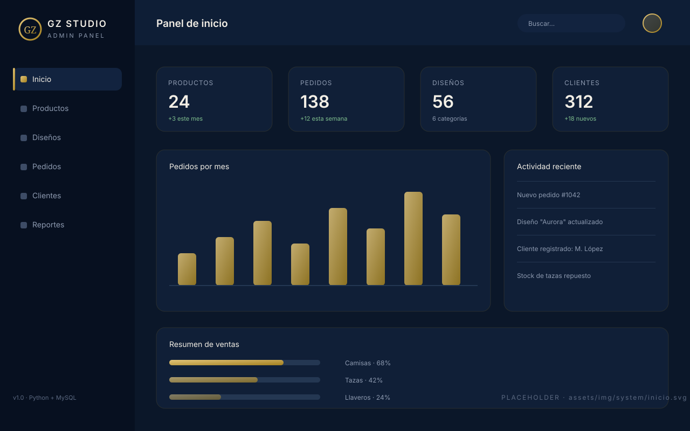

El proyecto detrás de la tienda
GZ Studio no es solo un catálogo: es un sistema de gestión que permite administrar productos, diseños, pedidos y clientes desde una misma interfaz.
Módulos
Todo bajo control
Cuatro módulos que le permiten al administrador operar el negocio completo. Haz clic en cada tarjeta para ver más.
Interfaz administrativa
Conoce nuestro sistema
Así se ve el panel donde el administrador opera GZ Studio. Selecciona un módulo para verlo en pantalla.

Las imágenes son placeholders: sustitúyelos por las capturas reales de tu sistema.